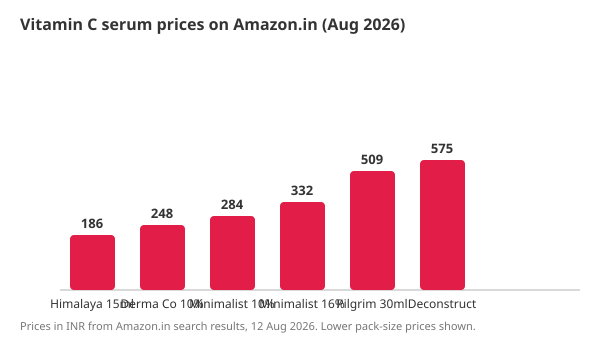

Best Vitamin C Serum in India (2026): 6 Tested Picks by Price and Rating
The short version
TL;DR: The best vitamin C serums on Amazon.in right now (August 2026, prices checked live):- Best overall: Minimalist 10% - ₹284-449, 4.1 stars, 23.6K ratings
- Best value: The Derma Co 10% - ₹248-519, 4.0 stars, 14.9K ratings
- Best for sensitive skin: Deconstruct 10% liposomal - ₹575, 4.2 stars
- Cheapest credible option: Himalaya - ₹186, 4.0 stars
Prices below were taken from Amazon.in search results on 12 August 2026 and can change any day.
What should you look for in a vitamin C serum in India?
Three things matter more than brand name: the concentration of ascorbic acid (or a stable derivative), the packaging, and the price per ml. Indian summers and humidity are hard on vitamin C, so airless or dark-glass packaging matters more here than in cooler climates. A 10% concentration is the sweet spot for most skin - strong enough to show results, gentle enough to use daily. Anything below 5% is mostly cosmetic, and anything above 20% rarely adds benefit for the extra irritation risk.
Stable derivatives (like magnesium ascorbyl phosphate or ethylated ascorbic acid) are more forgiving for sensitive skin but generally show slower results than plain L-ascorbic acid at the same concentration. If your skin tolerates it, L-ascorbic acid serums at 10% are the research-backed standard.
Which vitamin C serums are actually selling well on Amazon.in?
| Serum | Price (Aug 2026) | Rating | Ratings | Best for |
|---|---|---|---|---|
| Himalaya Brightening Vitamin C Orange, 15 ml | ₹186 | 4.0 | 2.6K | Budget first-timers |
| The Derma Co 10% Vitamin C + 5% Niacinamide | ₹248-519 | 4.0 | 14.9K | Value + dark spots |
| Minimalist 10% Advanced Vitamin C | ₹284-449 | 4.1 | 23.6K | Most people (best reviewed) |
| Minimalist 16% Vitamin C + Vitamin E | ₹332 | 4.1 | 23.6K* | Experienced users |
| Pilgrim 10% Vitamin C + Niacinamide, 30 ml | ₹509 | 4.1 | 7.9K | Larger bottle per rupee |
| Deconstruct 10% Vitamin C (liposomal) | ₹575 | 4.2 | - | Sensitive skin |
Prices and ratings from Amazon.in search results, fetched 12 August 2026. Review counts are approximate (as displayed on the results page). The Minimalist 16% shares the product family rating with the 10% line in Amazon's display.

Is the Minimalist 10% vitamin C serum worth it?
It is the most-reviewed option in this category (23.6K ratings at 4.1 stars), which makes it the safest default: that many reviews means the product has been bought and used at scale, and the rating has held. The 10% formula pairs ascorbic acid with ferulic acid, which stabilises the vitamin C - useful in Indian conditions. Expect to pay ₹284-449 depending on the pack size and the day's deal.
Is The Derma Co 10% serum a better value?
At ₹248 for the standard pack (₹519 for the larger one), The Derma Co 10% Vitamin C with 5% niacinamide undercuts Minimalist on price while adding niacinamide, which helps with dark spots and oil control. 14.9K ratings at 4.0 stars is a solid track record. The trade-off: the combined formula means you are layering two actives, which is more than a beginner might want.
What about the budget options - is Himalaya worth it?
Himalaya's Brightening Vitamin C Orange Face Serum at ₹186 is the cheapest entry point that still has a real review base (4.0 stars, 2.6K ratings). It uses a gentler formula aimed at first-time serum users. You get what you pay for: lower active concentration means slower visible results, but for someone unsure whether their skin tolerates vitamin C, ₹186 is a low-risk experiment.
How do you use a vitamin C serum correctly?
- Wash your face and pat it dry.
- Apply 3-4 drops of serum to your face and neck while skin is still slightly damp.
- Wait 2-3 minutes for it to absorb, then apply moisturiser.
- Use it in the morning before sunscreen - vitamin C boosts sunscreen effectiveness.
- Use daily for at least 8-12 weeks before judging results; dark spots fade slowly.
Should you buy a 10% or 16% vitamin C serum?
Start at 10% if you are new to vitamin C. The Minimalist 16% (₹332) adds vitamin E and targets more advanced users; higher concentration means faster results for some skin but more irritation risk. There is no reason to start at 16%. Move up only if a 10% formula has been comfortable for a few months and you want stronger brightening.
FAQ
Which vitamin C serum is best in India for beginners?
Minimalist 10% (₹284-449, 4.1 stars across 23.6K ratings) is the safest first purchase - well-reviewed, stable formula, widely available on Amazon.in. If budget is the constraint, Himalaya at ₹186 is the cheapest credible option.
Do vitamin C serums expire quickly in Indian heat?
Yes - ascorbic acid degrades with heat, light, and air. Store the bottle away from sunlight and keep it tightly closed. This is why airless pumps and dark glass matter in India more than in cooler climates.
Can vitamin C serum be used on sensitive skin?
Some sensitive skin tolerates it fine, but start with a lower concentration (5-10%) or a liposomal formula like Deconstruct's (₹575), and patch-test behind your ear for a few days first.
Should vitamin C serum be used in the morning or night?
Morning is the research-backed choice: vitamin C protects skin from daytime oxidative stress and boosts sunscreen effectiveness. It can also be used at night if that suits your routine.
How long until vitamin C shows results?
Most people see a brighter, more even tone in 8-12 weeks of daily use. Dark spots fade more slowly than overall brightening.